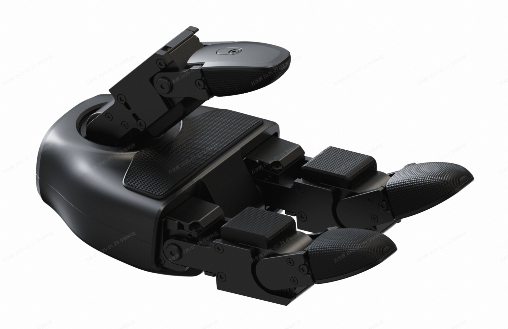
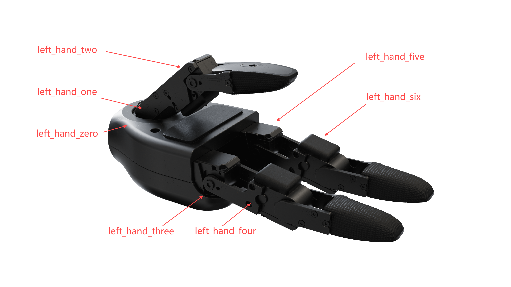
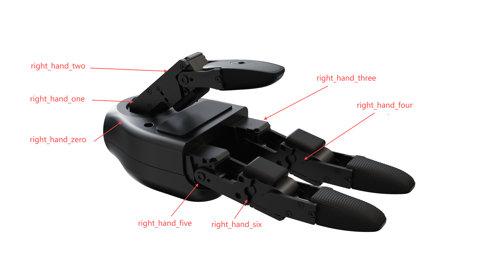
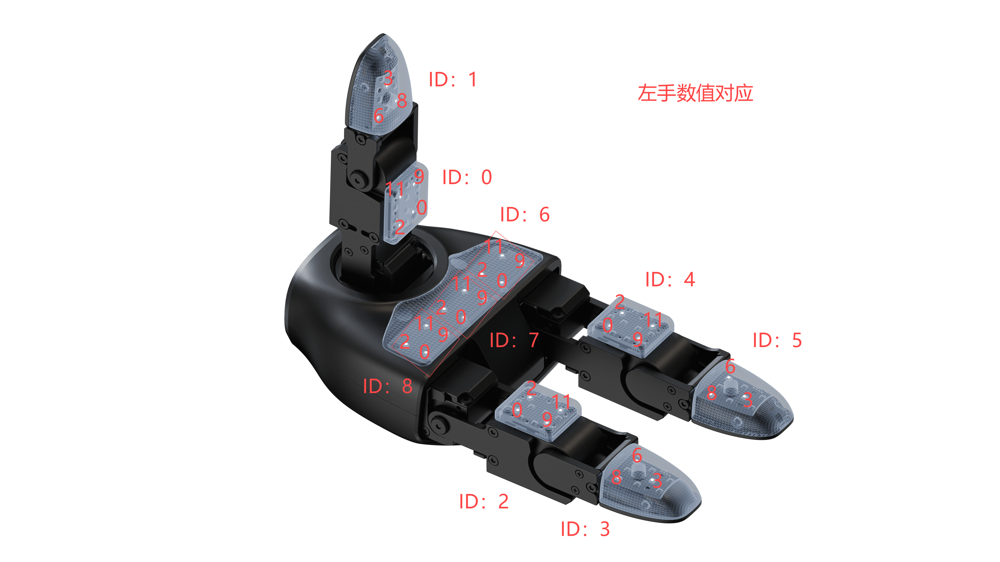
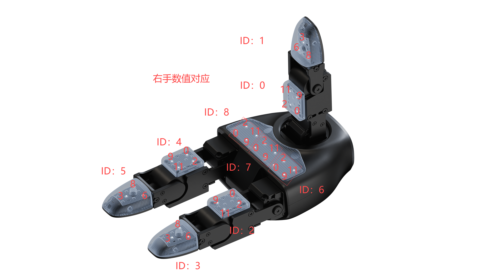

Dex3-1 灵巧手开发
灵巧手介绍
G1 可选配宇树自研 Dex3-1 力控灵巧手，该灵巧手共有 3 根手指, 其中各手指有 2 个弯曲自由度，拇指额外有 1 个旋转自由度, 共有 7 个自由度。 灵巧手可选配安装点阵触觉传感器, 在每个指肚位置(共 6 处)有一个 3 * 4 的点阵式传感器。 本文只介绍如何如何通过 unitree_sdk2 控制 G1 上的灵巧手，文档最后附 Demo 程序，其中有示例获取灵巧手的状态信息、控制功能等。 灵巧手区分为左右手。其中，单只 Dex3-1 灵巧手左右对称。在进行灵巧手控制的时候，分别对不同的消息通道进行通信并控制对应的灵巧手。详见灵巧手控制控制方式一节。

可从 此处 访问 unitree_sdk2，运行方式详见 《快速开发》。 本章节例程源代码位于 GitHub。
技术参数
| 型号 | 控制接口 | 自由度 | 额定电压 |
|---|---|---|---|
| Dex3-1 | RS485 | 7 | 24V |
灵巧手控制控制方式
G1 内部会提供和 Dex3-1 进行通信并转为 DDS 消息的程序作为常驻服务，该服务会接收并处理用户请求。
获取 unitree_sdk2 之后，系统会加载消息结构体库，用户正确使用消息结构体，并与对应的接口通信就能够控制对应的灵巧手。
灵巧手头文件位于
/usr/local/include/unitree/hg_idl/HandState_.hpp
/usr/local/include/unitree/hg_idl/HandCmd_.hpp
用户可以在该文件中查看结构体信息
按消息结构排序
按照消息结构体排序，定义的是人类感知情况下的拇指、食指与中指。并按照顺序排序。
unitree_hg::msg::dds_::HandCmd_.motor_cmd 与 unitree_hg::msg::dds_::HandState_.motor_state 两个消息结构体包含所有的灵巧手电机的信息，其电机顺序如下：
| Hand Joint Index in IDL | Hand Joint Name |
|---|---|
| 0 | thumb_0 |
| 1 | thumb_1 |
| 2 | thumb_2 |
| 3 | middle_0 |
| 4 | middle_1 |
| 5 | index_0 |
| 6 | index_1 |
按 URDF 排序
由于 urdf 版本的灵巧手是相同坐标系下产生的位置信息，所以这里左右手略有不同。URDF可以在开源平台获取。 左手

| Hand Joint Index in URDF | Hand Joint Index in IDL | Hand Joint Name |
|---|---|---|
| left_hand_zero | 0 | thumb_0 |
| left_hand_one | 1 | thumb_1 |
| left_hand_two | 2 | thumb_2 |
| left_hand_three | 3 | middle_0 |
| left_hand_four | 4 | middle_1 |
| left_hand_five | 5 | index_0 |
| left_hand_six | 6 | index_1 |
右手

| Hand Joint Index in URDF | Hand Joint Index in IDL | Hand Joint Name |
|---|---|---|
| right_hand_zero | 0 | thumb_0 |
| right_hand_one | 1 | thumb_1 |
| right_hand_two | 2 | thumb_2 |
| right_hand_three | 3 | middle_0 |
| right_hand_four | 4 | middle_1 |
| right_hand_five | 5 | index_0 |
| right_hand_six | 6 | index_1 |
接口说明
用户向 "rt/dex3/(left or right)/cmd" 话题发送 unitree_hg::msg::dds_::HandCmd_ 消息控制灵巧手。
从 "rt/dex3/(left or right)/state" 话题接收 unitree_hg::msg::dds_::HandState_ 消息获取灵巧手状态。
IDL 数据格式
下面的 IDL为此次通信的控制结构体与状态结构体 控制结构体 HandCmd_：
struct HandCmd_ {
sequence<unitree_hg::msg::dds_::MotorCmd_> motor_cmd;
unsigned long reserve[4];
};//struct HandCmd_
MotorCmd_结构体为：
typedef struct { // 电机控制命令数据包 20字节
uint8_t head[2]; // 包头 0xFE 0xEE 参与CRC
RIS_Mode_t mode; // 电机控制模式 1Byte
uint8_t res; // 保留
int16_t tor_des; // 期望关节输出扭矩 256表示1mNM
int16_t spd_des; // 期望关节输出速度 256/2π表示100rad/s
int32_t pos_des; // 期望关节输出位置 32768/2π表示1rad
int16_t k_pos; // 期望关节刚度系数 1280表示1mN.m/rad
int16_t k_spd; // 期望关节阻尼系数 1280表示1mN.m/100rad/s
uint32_t CRC32; // CRC32
} MotorCmd_t;
其中 RIS_Mode_t 为：
typedef struct {
uint8_t id : 4; // 电机ID: 0,1...,13,14 15表示向所有电机广播数据
uint8_t status : 3; // 工作模式: 0.锁定 1.FOC 6
uint8_t timeout: 1; // Master->Motor: 0.禁用超时保护 1.开启 （默认1s超时）
// Motor->Master: 0.没有超时 1.触发超时保护(需要控制位发0清除)
} RIS_Mode_t; // 控制模式 1Byte
电机与手部状态指令 HandState_：
struct HandState_ {
sequence<unitree_hg::msg::dds_::MotorState_> motor_state;
sequence<unitree_hg::msg::dds_::PressSensorState_> press_sensor_state;
unitree_hg::msg::dds_::IMUState_ imu_state;
float power_v;
float power_a;
float system_v;
float device_v;
unsigned long error[2];
unsigned long reserve[2];
};
其中 HandState_、IMUState_在H 1 SDK 开发指南中的 《H-2 底层服务接口章节》 来了解 MotorState_等结构体中的数据填充规则。PressSensorState_ 结构体会在下面解释说明。 power_v 表示灵巧手接入电源总电压。 power_a 表示灵巧手接入电源总电流。system_v 表示灵巧手内部接入电源电压。 device_v 表示灵巧手中降压模块输出电压。 error 字段代表当前灵巧手输出的错误码，具体错误码的表达请参考 G 1 SDK 文档中电机状态信息错误。 reserve 字段暂时保留。
手部传感器结构体 PressSensorState:
struct PressSensorState {
float pressure[12];
float temperature[12];
unsigned long lost;
unsigned long reserve;
};
其中 pressure 为单个传感器：


图中 ID 表示一个传感器数据包PressSensorState_。数据包中pressure[12]数据索引对应的传感器位置已经在图中标识出。 传感器数据>= 10w 数值大小进行传输为有效值，数值= 3w 代表无数值，这里建议将 100000 降维至小数点 10.0000 进行显示运算。 temperature 代表传感器的温度值。CPP 控制接口函数示例
电机旋转示例
此函数可以控制灵巧手各个电机满行程运动。 rotateMotors Demo
void rotateMotors(bool isLeftHand) {
static int _count = 1; // 用来计数让手动起来
static int dir = 1; // 控制抓握方向
const float* maxTorqueLimits = isLeftHand ? maxTorqueLimits_left : maxTorqueLimits_right;
const float* minTorqueLimits = isLeftHand ? minTorqueLimits_left : minTorqueLimits_right;
for (int i = 0; i < MOTOR_MAX; i++) {
RIS_Mode_t ris_mode;
ris_mode.id = i; // 设置 id
ris_mode.status = 0x01; // 设置 status 为 0x01
ris_mode.timeout = 0x01; // 设置 timeout 为 0x01
uint8_t mode = 0;
mode |= (ris_mode.id & 0x0F); // 取低 4 位 id
mode |= (ris_mode.status & 0x07) << 4; // 取高 3 位 status 并左移 4 位
mode |= (ris_mode.timeout & 0x01) << 7; // 取高 1 位 timeout 并左移 7 位
msg.motor_cmd()[i].mode(mode);
msg.motor_cmd()[i].tau(0);
msg.motor_cmd()[i].kp(0.5); // 设置控制增益 kp
msg.motor_cmd()[i].kd(0.1); // 设置控制增益 kd
// 计算目标位置 q
float range = maxTorqueLimits[i] - minTorqueLimits[i]; // 限位范围
float mid = (maxTorqueLimits[i] + minTorqueLimits[i]) / 2.0; // 中间值
float amplitude = range / 2.0; // 振幅
// 使用 _count 动态调整 q 值
float q = mid + amplitude * sin(_count / 20000.0 * M_PI); // 生成一个随时间变化的正弦波
// if(i == 0)std::cout << q << std::endl;
msg.motor_cmd()[i].q(q); // 设置目标位置 q
}
handcmd_publisher->Write(msg);
_count += dir;
// 控制抓握方向
if (_count >= 10000) {
dir = -1;
}
if (_count <= -10000) {
dir = 1;
}
usleep(100); // 控制循环频率，避免过快发送命令
}
抓握示例
此例程可以控制灵巧手保持抓握 gripHand Demo
void gripHand(bool isLeftHand) {
// 定义左右手的限位值
const float* maxTorqueLimits = isLeftHand ? maxTorqueLimits_left : maxTorqueLimits_right;
const float* minTorqueLimits = isLeftHand ? minTorqueLimits_left : minTorqueLimits_right;
for (int i = 0; i < MOTOR_MAX; i++) {
RIS_Mode_t ris_mode;
ris_mode.id = i; // 设置 id
ris_mode.status = 0x01; // 设置 status 为 0x01
ris_mode.timeout = 0; // 设置 timeout 为 0x01
uint8_t mode = 0;
mode |= (ris_mode.id & 0x0F); // 取低 4 位 id
mode |= (ris_mode.status & 0x07) << 4; // 取高 3 位 status 并左移 4 位
mode |= (ris_mode.timeout & 0x01) << 7; // 取高 1 位 timeout 并左移 7 位
msg.motor_cmd()[i].mode(mode);
msg.motor_cmd()[i].tau(0);
// 计算中间位置
float mid = (maxTorqueLimits[i] + minTorqueLimits[i]) / 2.0; // 中间值
// 设置电机命令
msg.motor_cmd()[i].q(mid); // 设置目标位置为中间值
msg.motor_cmd()[i].dq(0); // 设置速度为 0
msg.motor_cmd()[i].kp(1.5); // 设置控制增益 kp
msg.motor_cmd()[i].kd(0.1); // 设置控制增益 kd
}
msg.reserve()[0] = 0;
// 发布命令
handcmd_publisher->Write(msg);
usleep(1000000); // 每秒发送一次命令
}
停止电机示例
stopMotors Demo
void stopMotors() {
for (int i = 0; i < MOTOR_MAX; i++) {
RIS_Mode_t ris_mode;
ris_mode.id = i; // 设置 id
ris_mode.status = 0x01; // 设置 status 为 0x06
ris_mode.timeout = 0x01; // 设置 timeout 为 0x01
uint8_t mode = 0;
mode |= (ris_mode.id & 0x0F); // 取低 4 位 id
mode |= (ris_mode.status & 0x07) << 4; // 取高 3 位 status 并左移 4 位
mode |= (ris_mode.timeout & 0x01) << 7; // 取高 1 位 timeout 并左移 7 位
msg.motor_cmd()[i].mode(mode);
msg.motor_cmd()[i].tau(0);
msg.motor_cmd()[i].dq(0);
msg.motor_cmd()[i].kp(0);
msg.motor_cmd()[i].kd(0);
msg.motor_cmd()[i].q(0); // 停止所有电机
}
handcmd_publisher->Write(msg);
usleep(1000000); // 每秒发送一次停止指令
}
打印电机状态示例
printState Demo ```cpp
void printState(bool isLeftHand){
Eigen::Matrix
} ```